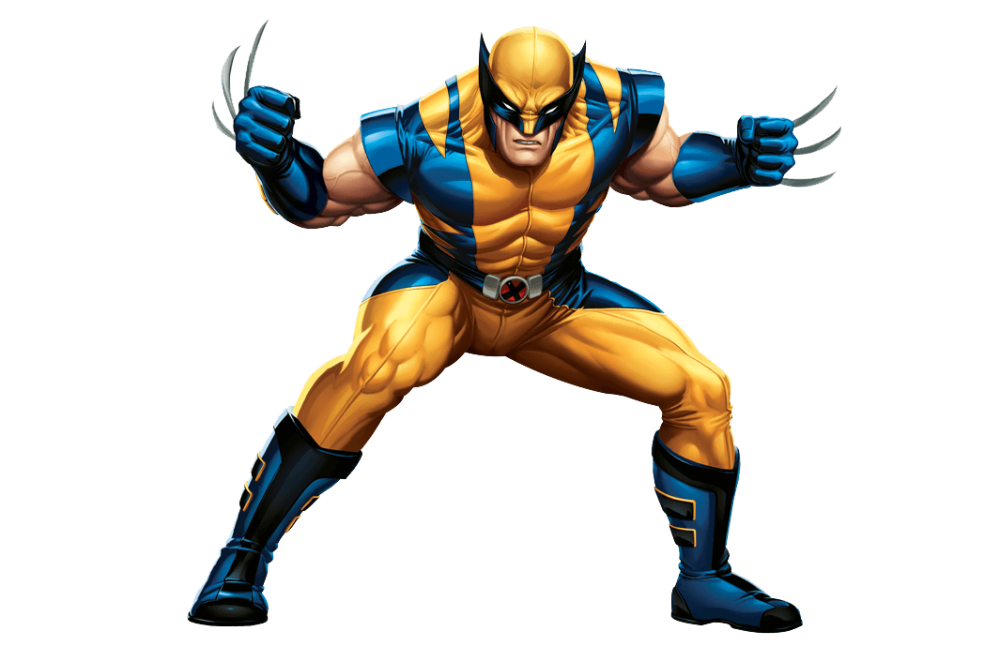
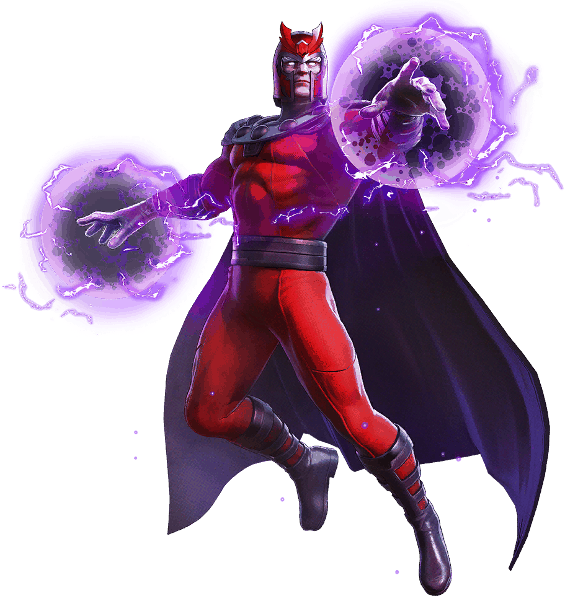
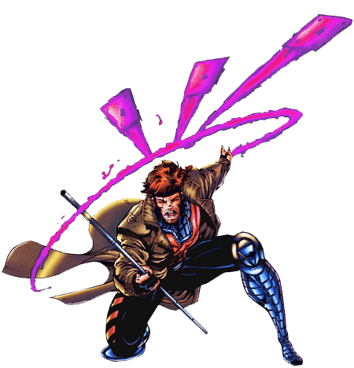

Sobre mí
En mi infancia fui entrenada como una asesina hasta que una serie de circunstancias me hizo encontrarme con Lobezno y los X-Men.
Asistí a la escuela La Escuela para Jóvenes Talentos creada por Charles Xavier y finalmente me convertí en un miembro de los X-Men.
Fui creada por Craig Kyle y Christopher Yost para la serie animada X-Men: Evolution, donde hice mi primera aparición en el capítulo 41 de la tercera temporada, estrenado en agosto de 2003.
Mi primera aparición en los cómics fue en NYX #3 de 2004.
Poderes
Tengo una serie de habilidades y atributos que me convierten en una guerrera mortal y efectiva. Algunos de sus principales atributos incluyen:
- Factor de curación acelerada: tengo la capacidad de sanar rápidamente de lesiones y enfermedades, lo que me hace resistente a la mayoría de las armas y lesiones.
- Garras retráctiles: tengo garras retráctiles en sus manos y pies, que puedo usar para atacar a sus enemigos con precisión y fuerza.
- Agilidad y destreza en combate: Soy una experta en artes marciales y combate cuerpo a cuerpo, lo que me hace muy hábil y peligrosa en una pelea.
- Instinto asesino: X-23 he sido entrenada para ser una asesina letal y eficiente, lo que me convierte en una oponente temible para cualquiera que se interponga en su camino.
- Fortaleza física: soy más fuerte y resistente que la mayoría de las personas, lo que me hace capaz de enfrentarse a enemigos más grandes y más fuertes que yo.
En resumen, soy compleja y mortal, combino habilidades sobrenaturales con habilidades y destrezas humanas para ser una guerrera efectiva y eficiente.
Mentores
Lobezno
- Factor curativo
- Resistencia a poderes psíquicos
- Garras retráctiles
- Esqueleto recubierto de Adamantium
- Sentidos agudizados
- Fuerza física sobrehumana

Magneto
- Control del magnetismo
- Creación de campos de fuerza magnéticos (ataque o defensa)
- Manipulación de cualquier tipo de energía relacionada con el espectro electromagnético
- Manipulación del hierro sanguíneo

Gambito
- Habilidad para cargar objetos inanimados con energía cinética explosiva (transforma la energía potencial de los objetos en energía cinética, acelerando sus moléculas con resultados explosivos)
- encanto hipnótico
- agilidad superhumana
- hábil en combate cuerpo a cuerpo y estrategia
- ladrón experto
- posee un pequeño campo de fuerza invisible que lo protege y lo ayuda a sanar de las heridas
